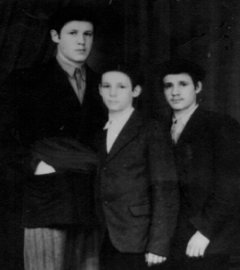

Mesirus Nefesh That Produced a Chassidishe Rav
A stubborn Jewish mother, a fearful Chassid, a boy hiding under the train seat and an underground yeshiva. * Despite all the obstacles in his way, the child grew up to be one of the great men of our generation. * R’ Isaac Schwei a”h – 26 Iyar 5748

Rabbi Isaac Schwei was born on Simchas Torah 5693/1932 in Abo, a port city in southwest Finland. His father, R’ Mordechai Eliyahu lived there, having been sent there on shlichus by the Rebbe Rayatz, to be involved in chinuch and kiruv of the youth. Soon after he was born, his paternal grandmother arrived from Dvinsk, Latvia with a request. Her father, R’ Isaac Trivash, who was a big talmid chacham and descendant of Rashi, had come to her in a dream and asked that her grandson be named for him.
In 5695, R’ Mordechai Eliyahu moved with his family to Narva, the easternmost city in Estonia, where he was appointed as rav. He served in this position until the outbreak of World War II in 5700/1940.
R’ Mordechai Eliyahu’s house, which was a house of Torah and chesed, was open to wayfarers, meshulachim and guests. Despite Isaac’s father’s greatness, he absorbed his main chinuch from his mother, Bunia. His mother, who grew up in the home of the famous Chassid, R’ Aharon Yaakov Veiler, was a model of mesirus nefesh for the Jewish education of her children.
With the outbreak of war, the government said that from each family in Narva one member had to enlist to dig defensive ditches around this border city. It was very close to the border with Russia. Most of the people drafted to execute this hard and dangerous labor were men, of course, but not in the Schwei family. The rebbetzin enlisted instead of her husband saying that if something happened, G-d forbid, he would be able to raise their children, which is something she would not be able to do.
Afterward, the family escaped the war by going eastward, crossing the border into Russia, to the village of Vobkent in Uzbekistan. The family experienced a great tragedy here when the esteemed father died a young man, leaving behind a widow, all alone, with no Jewish support system. The isolation was so great that when, a short while later, the oldest daughter Hinda died, her mother had to bury her herself.
Even during those terrible times, the mother continued with superhuman effort to educate her children, despite the circumstances, the terrible hunger, and their losses. When she heard that the gaon of Tchebin was living in Uzbekistan as a war refugee, she went to him and asked him to teach her son Boruch Sholom. In appreciation for this, she would bring him two pails of water every day and cleaned his house.
When she heard from R’ Eliezer Mishulovin that there was a Chabad yeshiva in Samarkand, she sent her three sons to this distant city. The children were sent one after the other. She first sent the oldest, Boruch Sholom, together with R’ Eliezer Mishulovin. When R’ Mishulovin returned, she went to him and received regards from her oldest son who was learning and doing well.
Then she pleaded, “You took my first son with you and he is sitting and learning Torah. What about my second son, my Isaac’l? He also has to learn. He also has to get a bit more chinuch which I cannot provide for him. Please, take him with you to the yeshiva.”
“Impossible,” he told her sadly. “He does not have identity papers and if I take him, it will be too dangerous. Aside from that, he is still young and needs his mother.”
She wondered, “Young? Too young to receive a Jewish chinuch in a yeshiva and grow up as he ought? Is there an age too young for that?”
The next day, when the Chassid was about to board the train, she gave her final instructions to her second son. “Hide under the bench and keep an eye on the Chassid and stick with him.” A final kiss, a strong embrace, and she pushed the eleven year old inside, a moment before the doors closed and the train began to move.
The youngest son, Aharon Yaakov, followed in the same way when he was only seven years old. Today he is the rav of Crown Heights.
Even after the war, when her sons were older, her devotion toward their learning did not cease and she continued bearing the burden of supporting the family. She was not fazed by any work that came her way, honorable or demeaning, the main thing being that her sons continue learning.
IN YESHIVAS TOMCHEI T’MIMIM
Although he went to yeshiva at a younger age than the rest of the boys, and without the ability to learn Torah until then, he quickly got into the rhythm of the yeshiva and even surpassed the other boys. He was gifted and went from strength to strength in his learning. Isaac soon became a byword among all those in yeshiva.
He was beloved and admired by his teachers and friends not only because of his outstanding abilities, but also thanks to his good character and pleasant ways, his refinement and his modesty.
Even when the yeshiva left Russia in the famous escape, R’ Isaac continued his learning in Poking and Brunoy. In Poking, the family lived in the home of R’ Yisroel Neveler who was like a father to the young orphans. In 5711, he went to learn in Montreal. He was only eighteen.
After a few years of diligent learning in the yeshiva in Montreal, in which he acquired a wide-ranging knowledge of Shas, he was appointed in 5716 as the mashgiach in the yeshiva. In a letter dated 28 Cheshvan, the Rebbe asked R’ Gringlass to inform him of the changes due to this appointment.
A YOUNG ROSH YESHIVA
While still a bachur, R’ Schwei was appointed as rosh yeshiva and since then, he was known, especially among the talmidim of the yeshiva in Montreal and the talmidim of Yeshivos Tomchei T’mimim around the world as an outstanding pedagogue. He devoted himself fully to every talmid. Many of his talmidim relate that to them he was not merely the rosh yeshiva, but like a father who looked out for their material welfare. Some of them became rabbanim, roshei yeshiva, and mashpiim. Married men would also consult with him.
In 5718, he married Golda, daughter of R’ Chaikel Chanin. The Rebbe was their mesader kiddushin.
After the wedding, he returned to Montreal and continued his work as rosh yeshiva. In addition, he worked hard to build Lubavitch mosdos in the city. He was one of the founders of Tzach, one of the founders of Beis Rivka, and other mosdos, and he ran the summer camp for decades.
He joined the beis din of the Vaad HaRabbanim of Montreal, as the Rebbe told him to do. There his amazing talents were revealed especially as it came to clarifying halachic matters, and he became one of the leading lights of the beis din.
During his work for the beis din, he fought for the amendment of Mihu Yehudi and shleimus ha’aretz. Through his work in the beis din, he developed connections which enabled him to convey the Rebbe’s message to great rabbanim and to senior Israeli politicians.
Despite being a rosh yeshiva and outstanding halachic authority, he was exceedingly modest and fled from any publicity. He was a big baal tz’daka and was outstanding in the mitzva of g’milus chesed, treating every person warmly. And this was all done in a low-key manner.
R’ Schwei worked with new baalei t’shuva who came to the yeshiva. These men sometimes left behind parents who were very upset by their children’s life changes. With insight and sensitivity, R’ Isaac guided the talmidim as he looked out for them as a father would for his children, until they were firmly established.
R’ Isaac passed away on 16 Iyar 5748 and is buried in Montefiore cemetery in New York.
After his passing, his brother R’ Aharon Yaakov published the s’farim, Kisvei R’ Isaac, as the Rebbe told him to do, which are based on shiurim that he gave and sermons he delivered. They display his greatness in all aspects of Torah, Nigleh and Chassidus, p’shat and drush. Much of the s’farim deal with deep analysis of the origin of Jewish customs.
THE POWER OF A MASHPIA
At one time, a malignant tumor was discovered in R’ Isaac. He immediately asked the Rebbe for a bracha. The response that he received the same day consisted of the words: consult with your mashpia.
Taken aback by the Rebbe’s answer, R’ Isaac spoke to his mashpia who dismissed him saying, “I don’t understand what is wanted of me.”
R’ Isaac wrote to the Rebbe again, saying the mashpia had nothing to say. The Rebbe’s response was to change mashpiim and to ask his advice.
R’ Isaac asked R’ Yitzchok Springer, the mashpia in 770, to be his mashpia. R’ Itche agreed and then R’ Isaac asked him what he thought about the tumor. Hearing that this was an instruction from the Rebbe, R’ Itche confidently said, “There is no disease and there is nothing to worry about!”
The following scans that were taken that same day showed that a miracle had occurred; the tumor had disappeared
R’ Schwei told an interesting story that occurred when they fled the communist regime:
We arrived in Poking, Germany with a group of Chassidim who traveled from Bucharia (Uzbekistan) via Lvov. They traveled the usual way, by forging documents and smuggling across borders. Fortunately, my mother knew Polish and she became the group’s spokesperson.
In Poking, we were given a quantity and variety of food to which we were unaccustomed. The Chassidim and rabbanim in the group began discussing whether, considering the physical condition of the children, women, and even the men, it was permissible or forbidden to eat the American canned goods we were given.
I was a young bachur and I saw their deliberations, the back and forth and the questioning looks on the faces of the Chassidim whom I considered reliable authorities.
An aristocratic woman suddenly entered the room. The rabbanim rose in her honor and cleared a place for her as they looked at her with respect. In a refined way she said she wanted to say a few words and asked the pardon and the permission of the rabbis. Silence reigned.
“I heard,” she said, “that there is a debate about the food we received and you don’t know what to tell Anash to do. I hereby state that it is permissible to eat this food without question. If you wonder how I can say this with such certainty, it is because I received parcels from my son in the US and among the products he sent me were canned goods like these. My son would only send me food that is perfectly kosher.”
After the woman left the room, I heard R’ Avrohom Eliyahu Plotkin and R’ Avrohom Maiyor (Drizin) tell their families that they could eat the foods.
I did not know what to do and whether I should be stringent and not eat it. I asked my friend, Shneur Zalman Morosov to ask his father (R’ Dovid Leib) what I should do. I also wanted to know who that woman was who was so respected by the great Chassidim.
I was told it was Rebbetzin Chana Schneersohn, the wife of R’ Levi Yitzchok who had been the rav in Dnepropetrovsk until he was arrested and exiled to a distant place where he died after much suffering. The Rebbetzin, they said, was the mechutenes of the Rebbe (Rayatz) and her son was Ramash. Of course, she could be relied upon 100%.
Beis Moshiach (staff). "Mesirus Nefesh That Produced a Chassidishe Rav." Beis Moshiach, no. 927 (May 21, 2014).